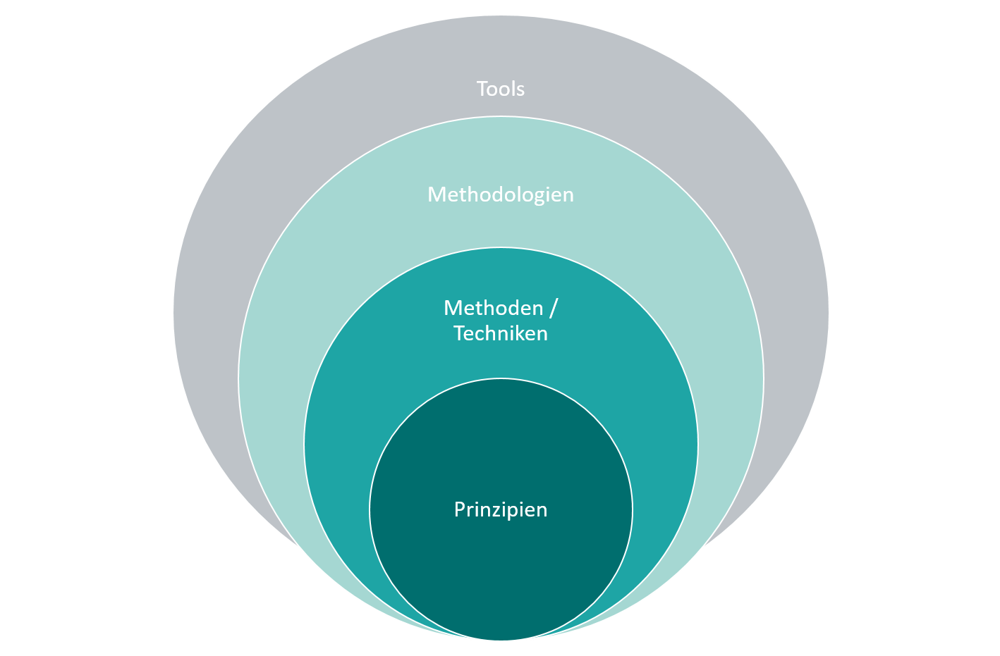

Prinzipien des Software Engineerings
Marcel Lüthi
Departement Mathematik und Informatik
Prinzip
Allgemeingültige Regel, Grundlage, auf der etwas aufgebaut ist; Grundregel; Grundsatz
- Duden
- Technolgien in der Informatik entwickelt sich rasant.
- Grundlegende Prinzipien sind seit vielen Jahrzehnten stabil.
- Gelten für Produkt und Prozess
Eigenschaften guter Prinzipien
Gute Prinzipien sollten abstrakt und falsifizierbar sein.
- Schlecht: Benutze JUnit um Tests zu schreiben
- Schlecht: Schreibe qualitativ gute Software
- Gut: Schreibe Tests immer zuerst
Prinzip - Methoden - Tools
Wichtige Prinzipien
- Genauigkeit und formales Vorgehen
- Trennung der Verantwortlichkeiten (Separations of concerns)
- Modularität
- Abstraktion
- Voraussehen von Veränderungen (Design for change)
- Allgemeinheit
- Schrittweises Entwickeln (Incrementality)
Wichtige Prinzipien
- Genauigkeit und formales Vorgehen
- Trennung der Verantwortlichkeiten (Separations of concerns)
- Modularität
- Abstraktion
- Voraussehen von Veränderungen (Design for change)
- Allgemeinheit
- Schrittweises Entwickeln (Incrementality)
Separierung der Verantwortlichkeiten
- Verschiedene Probleme separat angehen
- Reduziert Komplexität jeder Task
- Aufgaben und Verantwortlichkeiten können verteilt und parallelisiert werden
- Divide and Conquer
Beispiele
Produkt:
- Anforderungen separat betrachten
- Funktionalität
- Performance
- Benutzeroberfläche
- ...
Prozess:
-
Separiere Software Testing und Entwicklung
- Eigenes Team?
- Phasen in Wasserfallmodell
Modularität
- Wichtigstes Prinzip in der Softwareentwicklung
- Reduziert Komplexität
- Komplexes System wird in kleine Teile zerlegt
- Erlaubt Trennung der Verantwortlichkeiten
Modularität
Kopplung und Bindung
Kopplung
Wie stark sind Module verknüpft?Bindung (Kohäsion)
Wie gut bildet Modul logische Einheit?Modularität

Modular:
- Lose Kopplung
- Starke Bindung

Nicht-modular
- Starke Kopplung
- Schwache Bindung
Kopplung und Bindung
Lose Kopplung:
- Wenig Abhängigkeiten
- minimiert Auswirkung von Änderungen
- erleichtert Testen
Starke Bindung:
- Jedes Modul nur für eine Aufgabe verantwortlich
- erleichtert das Verstehen des Moduls
Abstraktion
- Wichtige Aspekte eines Problems werden identifiziert
- Details werden ignoriert
- Spezialfall von "Trennung der Verantwortlichkeiten"
- wichtig (Funktion)
- unwichtig (Detail)
Abstraktion in der Informatik
- Hardware:
- Blöcke und Addressen
- Betriebssystem
- Dateien
- Netzwerk Sockets
- Programmiersprache (Java)
- OutputStream